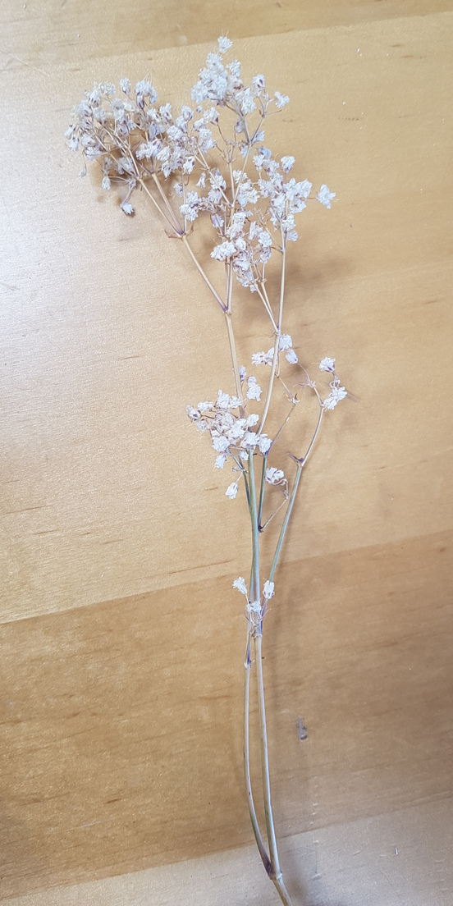
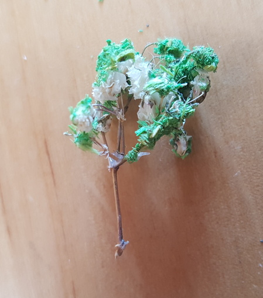
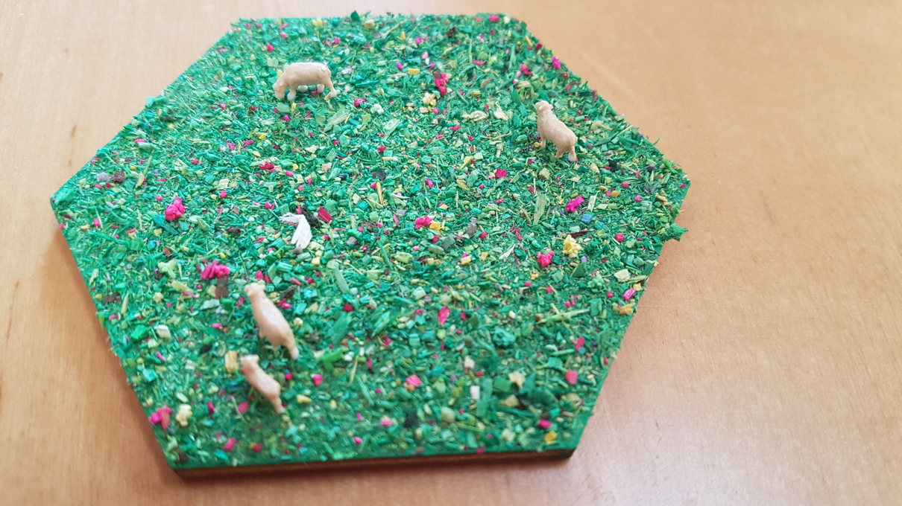
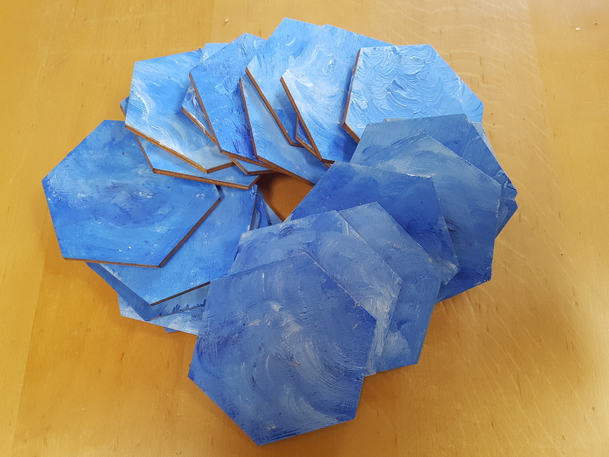

3D Catan
Wenn man mal wieder keine Freunde treffen darf, nicht in den Sportverein kann und wegen Elternzeit auch nicht arbeiten muss, habe ich hier eine passende Beschäftigung! mich hat dieses “kleine Projekt” nun eine Woche lang fast täglich begleitet und daher freue ich mich umso mehr es nun voller stolz präsentieren zu können. Mein 3D-Catan für bis zu 6 Spieler!

Das Rohmaterial
Als Rohmaterial habe ich Holzzuschnitte für die Sechsecke (8cm) der Felder und die Zahlenchips (2 cm) verwendet. Diese habe ich bei der Firma Bütic GmbH bestellt. Ursprünglich wollte ich Catan nur für 4 Spieler und ohne Wasser herstellen in der Hoffnung gleich 2 Spiele herstellen zu können, wenn ich je 50 Sechsecke und Kreisplättchen bestelle. Die Zuschnitte sind perfekt eben, gut bemal- und brennba.r

Lehmfelder
Für die Lehmfelder habe ich zunächt Strukturpaste aufgetragen und anschließend angemalt.

Ürsprünglich hatte ich überlegt auch Lehmsteine aus Fimo auf die Felder zu kleben, habe mich aber dagegen entschieden. Nur drei der Steine wurden für den Lehmhafen verwendet.
Holz
Das Holz war wohl am meisten arbeit, da ich zunächst mal Bäume basteln musste. Dies habe ich auf zwei verschiedene Varianten getan.
Zum einen habe ich diese getrockneten Pflanzen mit Leim bestrichen und in Grasstreu getunkt


Als zweite Variante habe ich Zahnstocher mit Holzstreu ummantelt und Moos darauf geklebt

Die Holzplatten wurden erst bemalt, dann mit Holzstreu ein kleiner Weg aufgestreut und mit dunklem Grün umrandet. Danach wurden die Bäume aufgeklebt.


Die Kle

Erz
Für das Erz bin ich spazieren gegangen und habe ein paar passende Steine gesam

Die Ritzen wurden mit etwas Moos veredelt
Das glitzernde Erz wurde mit Metallic-Anthrazit-Farbe hinzugefügt.

Für die Schaffelder wurden die Sechsecke zuerst grün grundiert und mit Grasstreu bestreut.

![]

Anschließend werden Schafen der Firma Faller in Größe N hinzugefügt. Holzleim hält tatsächlich extrem fest! die Schafe fallen dann trotz der geringen Klebefläche nicht um.

Getreide
Auch hier wird das Holz zuerst bemalt

Von Schilfähren werden Spitzen abgeschnitten
und diese auf das Holz geklebt
Der weiße Leim wird natürlich noch transparent

Wüste
Die Wüste ist kein Meisterwerk geworden…. Einfach grundiert
… und Vogelsand drauf gestreut
Nicht so sonderlich hübsch aber naja… ist ja bloß die Wüste.
Wasser
Mit Wasser drumrum sieht es dann doch besser aus :)
Die Flächen wurden nur angemalt. Einmal habe ich getestet, ob die Farbe etwas wässriger wird, wenn man sie mit Holzleim mischt, aber das hat nichts geändert, außer dass es etwas mehr Struktur gegeben hat.

Zahlenchips
Die Zahlenchips habe ich mit dem Holzbrenner beschrieben
Im Original sind 8 und 6 als sehr häufige Zahlen rot hervorgehoben. Das ist vor allem auch deswegen praktisch, da sich 6 und 9 durch die fehlende Orientierung der Chips sonst sehr ähnlich sehen.
Also habe ich ebenfalls die Zahl versucht rot zu malen
Ok… nicht schön…. also nächster Versuch: Das ganze Plättchen rot malen

… auch nicht besser… Punkte drumherum! Das ist es!

Viiiel besser! :)

Spielfiguren
Über die Spielfiguren habe ich mir viele Gedanken gemacht
-
die aus dem Originalspiel nehmen? Ich habe nur die Plastikversion und das sieht nicht gut aus
-
Figuren kaufen? Zu teuer
-
Mit Steinen? Zu unregelmäßig. Dadurch sind evtl Städte und Dörfer nicht auseinander zu halten
-
Bohnen? Jaaa! das sind quasi regelmäßige Steine!
Bohnen also! Rote Bohnen am besten. Die haben eine schöne Größe. Aber REWE macht mit seinem Angebot ein Strich durch die Rechnung: Nur Linsen und weiße Bohnen… warten, bis wieder welche da sind oder in einen anderen Laden gehen kommt nicht in Frage! Ich will doch loslegen! Also weiße Bohnen, obwohl die viel zu klein sind
Um die Größe zu kompensireen, werden einfach mehrere Bohnen zusammen geklebtB

Für die Städte habe ich verschiedene Varianten getestet. Von Penis bis Haufen alles dabei!
And the winner iiiiiiiis:
für die Straßen mussten geköpfte und zweigeteilte Streichhölzer herhalten. Angemalt sieht das ganze dann so aus:

Häfen
Auch für die Häfen hatte ich zwei Versionen. Zuerst habe ich Icons mit dem Holzbrenner auf übrig gebliebene Zahlenchips gemalt.

Nicht ganz schlecht aber den Zahlenchips zu ähnlich. Das erschwert die Übersicht. Außerdem müssen die Runden Chips schon sehr genau zwischen dzwei Eckpunkte gelegt werden, um zu sehen, wozu sie gehören.
Am liebsten wäre es mir gewesen, die Sechsecke in Dreiecke zu teilen und diese dann mit dem Holzbrenner bemalen. Leider hatte ich davon aber keines mehr übrig. Also habe ich eben diese Dreiecke aus anderem Holz selbst geschnitten.

Da das Holz aber nicht das gleiche ist, kann man es schlecht farblos lassen und mit dem Brenner lies sich auch nicht gut arbeiten… So wurden die Häfen weiß mit Edding beschrieben
Für die 2:1 Häfen wurde ich noch kreativer!

So gefällt es mir!

Der Räuber
Den Räuber habe ich aus FIMO geformt
BILD RÄUBER
Was hat es gekostet?
Hier eine kleine Kostenauflistung:
| Was? | Wo? | Kosten |
|---|---|---|
| Holzsechsecke (50 Stück, 8cm) | Bütic GmbH | 25€ |
| Holzchips (50 Stück, 2cm) | Bütic GmbH | 4€ |
| Verschiedene Streusorten und Moos | Ebay Kleinanzeigen | 12€ |
| Strukturpaste von Faller | Modellbau Berlinski | 6€ |
| Schafe und Schäfer von Faller | Modellbau Berlinski | 9,50€ |
| Weiße Bohnen | REWE | 2€ |
| Holzleim | Toom | 6€ |
| Farbe, Fimo, Streichhölzer, Zahnstocher | hatte ich noch zu Hause | ? |
| Steine, Schilf, getrocknete Blumen | draußen | kostenlos |
| Versand | verschieden | 6€ |
Das ergibt rund 70€. Hui… Das hätte ich besser nicht ausrechnen sollen… Jetzt fühle ich mich schlecht :D
Wobei ich von dem Streu, den Bohnen, dem Holzleim und der Strukturpaste noch mehr als genug für 5 weite Spiele übrig hätte. Auch von den Holzchips habe ich noch etwa die Hälfte übrig.
Es hat auf jedenfall meinen Coronatagen ein wenig BEdeutung gegeben, hat Spaß gemacht, und ist bestimmt auch toll zu bespielen! Jetzt müssen wir uns nur wieder treffen dürfen, damit das Spiel seiner Bestimmung gerecht werden kann!